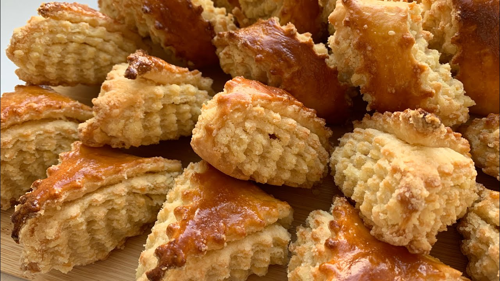

приготовление:
-
Заранее достать из холодильника 100 г сливочного масла для начинки и оставить при комнатной температуре, чтобы оно стало мягким.
-
Для теста просеять в большую миску 400 г муки, добавить 1 ч. л. разрыхлителя с горкой и перемешать. Обвалять в мучной смеси 250 г холодного сливочного масла и натереть его на крупной или средней тёрке прямо в миску, периодически перемешивая с мукой. Быстро перетереть руками, не давая маслу растаять.
-
В отдельной миске смешать 1 яйцо, 200 г сметаны и 1 ч. л. ванильного экстракта. Соединить с масляно-мучной смесью: сначала перемешать ложкой, затем переложить на слегка присыпанную мукой поверхность и быстро собрать руками в шар за ≈ 1,5 минуты. Разделить тесто на две части, обернуть пищевой плёнкой и убрать в холодильник на время приготовления начинки.
-
Для начинки соединить 100 г мягкого сливочного масла, 250 г сахара и 1 ч. л. ванильного экстракта. Перетирая смесь руками, постепенно добавить 250 г просеянной муки. При сжатии в кулаке начинка должна собираться в плотный комок, а при нажатии — легко рассыпаться. Если смесь слишком влажная, добавить немного муки, если слишком сухая — немного растительного масла. По желанию вмешать орехи или сухофрукты.
-
Разогреть духовку до 180–190 градусов. Достать одну часть теста и раскатать её как можно тоньше в прямоугольник, при необходимости присыпая мукой. Распределить по тесту половину начинки, не доходя до краёв, и слегка уплотнить. Свернуть в рулет и аккуратно прокатать скалкой. Повторить со второй частью теста и оставшейся начинкой.
-
Для смазывания взболтать 2 яичных желтка с 1 ст. л. молока. Смазать рулеты и обратной стороной вилки нанести ромбовидный узор. Нарезать фигурным шпателем или обычным ножом на треугольники либо полоски шириной ≈ 3 см.
-
Переложить гату на застеленный пергаментом противень, оставляя расстояние между кусочками. Выпекать ≈ 20 минут до золотистой корочки.